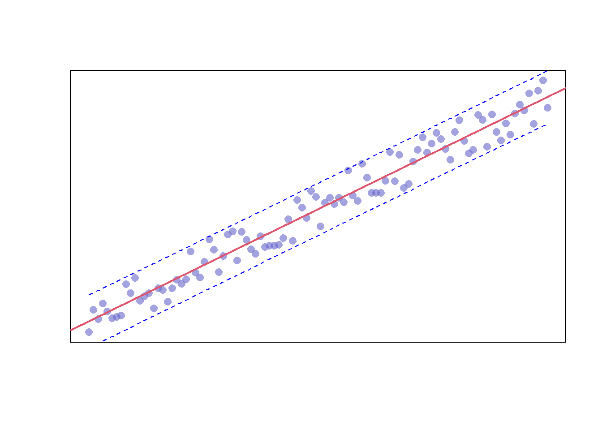
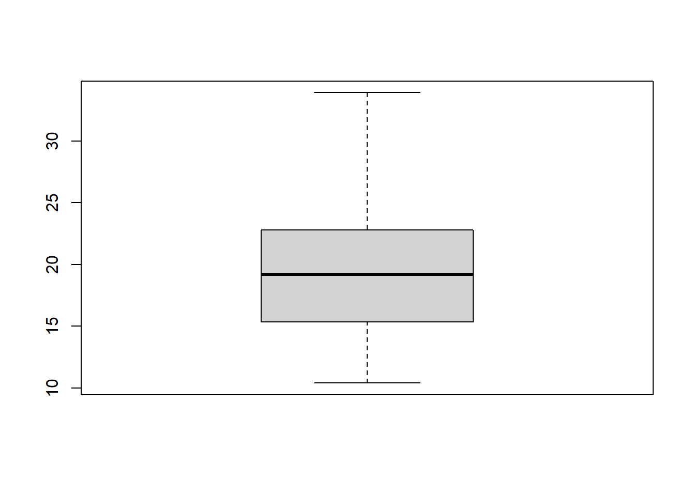

17 Plotting
This chapter will cover the basics of creating plots in R. It will begin by demonstrating the plotting capabilities available in R out of the box. These capabilities are often referred to as “Base R”. This will be followed by an introduction to “ggplot2” which is one of the most common plotting libraries in R.
word cloud
17.1 Plotting your Regression Model
Now that you’ve learned how create a linear regression model, let’s look at how you might go about representing it visually.
Here’s a preview of the dataset we’ll be using:
| y | x |
|---|---|
| -4.400327 | 1 |
| 5.428396 | 2 |
| 1.401835 | 3 |
| 8.347445 | 4 |
| 4.653595 | 5 |
| 1.768966 | 6 |
We’ll begin by just creating a scatter plot of the raw data.
plot(df$x, df$y)Additionally, you can alter the appearance of your points by using the “pch”, “cex”, and “col” options. PCH stands for Plot Character and will adjust the symbol used for your points. The available point shapes are listed in the image below.
ggpubr::show_point_shapes()
The “cex” option allows you to adjust the symbol size. The default value is 1. If you were to change the value to .75, for example, the plot symbol would be scaled down the 3/4 of the default size. The “col” option allows you to adjust the color of your plot symbols.
plot(df$x, df$y, col=rgb(0.4,0.4,0.8,0.6), pch=16, cex=1.2)You can adjust the axes with the “xlab”, “ylab”, “xaxt”, and “yaxt” options (amongst other available options). In the following example we will remove the axes altogether.
plot(df$x, df$y, col=rgb(0.4,0.4,0.8,0.6), pch=16, cex=1.2, xlab="", ylab="", xaxt="n", yaxt="n")Finally, you can add a trend line by creating a model and adding the fitted values to the graph. We’ll also adjust the line width and color with the “lwd” and “col” parameters, respectively.
plot(df$x
, df$y
, col=rgb(0.4,0.4,0.8,0.6)
, pch=16
, cex=1.2
, xlab=""
, ylab=""
, xaxt="n"
, yaxt="n")
model <- lm(df$y ~ df$x)
lines(model$fitted.values, col=2, lwd=2)Alternatively, you can enrich your data with limits by using the “predict” function paired with the “polygon” function as shown below.
# Declare your variables
x <- df$x
y <- df$y
# Create your model
model <- lm(y ~ x)
# Predict your model
predict_model <- predict(model, interval="predict")
# Plot your raw data
plot(x, y, col=rgb(0.4,0.4,0.8,0.6), pch=16, cex=1.2, xlab="", ylab="", xaxt="n", yaxt="n")
# Get the index of your data
ix <- sort(x, index.return=T)$ix
# Add your trendline
lines(x[ix], predict_model[ix, 1], col=2, lwd=2)
# add a shape to represent your upper and lower limits
polygon(c(rev(x[ix]), x[ix]), c(rev(predict_model[ix, 3]), predict_model[ix, 2]), col = rgb(0.7,0.7,0.7,0.4), border = NA)
17.2 Plots Available in Base R
Address the fact that certain types of plots have already been covered previosuly in the book.
17.2.1 Scatter Plot
As you’ve seen in previous chapters, you can create a scatter plot by using the “plot” function. Here’s a basic scatter plot of the mpg variable from the mtcars dataset.
plot(mtcars$mpg)
In the previo
17.2.2 Box Plot
boxplot()
17.2.3 Plot Matrix
pairs()
17.2.4 Pie Chart
pie()
17.2.5 Bar Plot
barplot()
17.2.6 Histogram
hist()
17.2.7 Density Plot
density()
17.2.8 Dot Chart
dotchart()
17.3 ggplot2
17.3.1 Different types of plots?
17.4 Resources
- Resource: https://ggplot2.tidyverse.org/